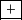
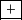

suivant: Recopier l'entrée ou la
monter: Comment bien utiliser les
précédent: Généralités
Table des matières
Index
Si on veut insérer un niveau supplémentaire ou insérer un groupe de
niveaux, on utilise les premières lignes des menus CAS ou Tableur
ou... selon la nature du niveau désiré. Cela va créer un nouveau niveau
d'entrée situé avant le dernier
niveau actif ou sélectionné (on sélectionne un niveau en cliquant sur
son numéro). Il faut noter que si on vient de valider une modification dans
une ligne de commandes, le niveau actif est le niveau suivant celui que l'on
vient de modifier.
Le niveau supplémentaire ou le groupe de niveaux aura comme numéro
celui où se trouve le curseur, les numéros des niveaux suivants seront
alors dècalés de +1. Selon ce que l'on veut ajouter on choisit :
- commentaire ou le raccourci Alt+c pour avoir une ligne
servant à écrire des commentaires,
- equation ou le raccourci Alt+e pour avoir un éditeur
d'expressions et un bouton M en bas et à droite
permettant de sélectionner toute l'expression, d'évaluer la sélection ou
d'annuler la modification précédente,
- nouvelle entrée ou le raccourci Alt+n pour avoir une ligne
de commandes,
- Nouveau groupe pour avoir un niveau avec une ligne contenant le numéro du niveau et un bouton
 vert (si la session a été
sauvegardée) ou rouge (si des modifications ont eu lieu depuis la dernière
sauvegarde). Cette ligne n'est pas une ligne de commandes, elle permet de
donner un titre au groupe et elle est suivie d'une ligne de commandes de
numéro 1 (premier niveau du groupe) qui sera ensuite suivie, comme dans une
session, de lignes de numéro 2 etc...
Le bouton
comme dans une session, veut dire que les niveaux du
groupe sont visibles c'est à dire que le groupe est déplié. Si on veut
plier le groupe, il suffit de cliquer sur ce bouton, les niveaux du groupe ne
sont alors plus visibles et on ne voit plus que le titre de ce groupe et le
devient
.
vert (si la session a été
sauvegardée) ou rouge (si des modifications ont eu lieu depuis la dernière
sauvegarde). Cette ligne n'est pas une ligne de commandes, elle permet de
donner un titre au groupe et elle est suivie d'une ligne de commandes de
numéro 1 (premier niveau du groupe) qui sera ensuite suivie, comme dans une
session, de lignes de numéro 2 etc...
Le bouton
comme dans une session, veut dire que les niveaux du
groupe sont visibles c'est à dire que le groupe est déplié. Si on veut
plier le groupe, il suffit de cliquer sur ce bouton, les niveaux du groupe ne
sont alors plus visibles et on ne voit plus que le titre de ce groupe et le
devient
.
- geo2d ou le raccourci Alt+g pour avoir une barre de menu, et
en dessous, une figure de géométrie plane avec des boutons pour régler le
graphique à droite et une ligne de commandes de numéro 1 à gauche,
- geo2d exact pour travailler avec des coordonnèes exactes : si on
définit des points en cliquant, les points auront des coordonnèes exactes
et on pourra utiliser l'instruction assume pour faire des
démonstrations,
- geo3d ou le raccourci Alt+h pour avoir une barre de menu, et
en dessous, une figure de géométrie 3D avec des boutons pour régler le
graphique à droite et une ligne de commandes de numéro 1 à gauche,
- geo3d exact pour travailler avec des coordonnèes exactes,
- tableur ou le raccourci Alt+t pour avoir une barre de menu,
et en dessous, un tableur à droite et son écran graphique à gauche,
- program ou le raccourci Alt+p pour avoir une
barre de menu, et en dessous, un éditeur de programmes.
- dessin tortue ou le raccourci Alt+d pour avoir un écran
graphique au centre permettant de faire des dessins en pilotant une tortue
avec un bandeau contenant les différentes commandes, une ligne de commandes
de numéro 1 à gauche et à droite un éditeur, avec
sa barre de menu qui contiendra les commandes réalisées.
suivant: Recopier l'entrée ou la
monter: Comment bien utiliser les
précédent: Généralités
Table des matières
Index
Documentation de giac écrite par Renée De Graeve